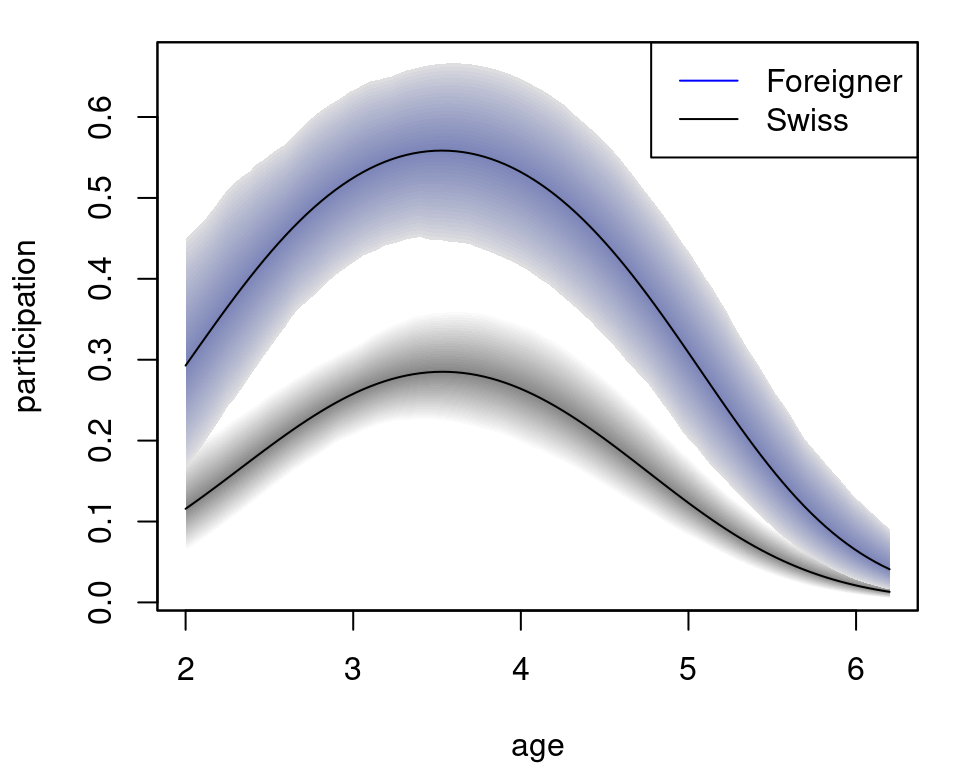
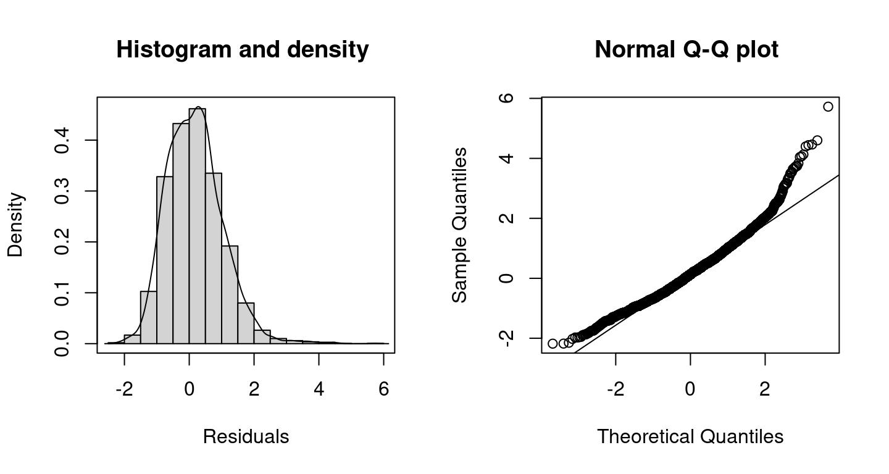

glm.RmdThe bamlss package is perfectly suitable for estimating (Bayesian) generalized linear models (GLM) and provides infrastructures for the estimation using very large data sets, too. Within the main model fitting function bamlss(), the possible family specifications for fitting GLMs are:
"gaussian" or gaussian_bamlss(),"beta" or beta_bamlss(),"binomial" or binomial_bamlss(),"gamma" or gamma_bamlss(),"poisson" or poisson_bamlss().In addition, there is a wrapper function for the family objects provided by the gamlss package (???), so in principle all gamlss families can be used by just passing them to the family argument in the bamlss() function (see also the count data regression example).
First, we illustrate how to fit standard GLMs and how to do inference using the bamlss framework. Aftwards, we show how to estimate GLMs using very large data set.
This example is taken from the AER package (Kleiber and Zeileis 2018, 2008) and is about labor force participation (yes/no) of women in Switzerland 1981. The data can be loaded with
## participation income age education youngkids oldkids foreign
## 1 no 10.78750 3.0 8 1 1 no
## 2 yes 10.52425 4.5 8 0 1 no
## 3 no 10.96858 4.6 9 0 0 no
## 4 no 11.10500 3.1 11 2 0 no
## 5 no 11.10847 4.4 12 0 2 no
## 6 yes 11.02825 4.2 12 0 1 noThe data frame contains of 872 observations on 7 variables, where some of them might have a nonlinear influence on the response labor participation. Now, a standard Bayesian binomial logit model can be fitted with
library("bamlss")
## First, set the seed for reproducibly.
set.seed(123)
## Model formula.
f <- participation ~ income + age + education + youngkids + oldkids + foreign + I(age^2)
## Estimate model.
b <- bamlss(f, family = "binomial", data = SwissLabor,
n.iter = 12000, burnin = 2000, thin = 10)Note, to capture nonlinearities, a quadratic term for variable age is added to the model. The model summary gives
summary(b)##
## Call:
## bamlss(formula = f, family = "binomial", data = SwissLabor, n.iter = 12000,
## burnin = 2000, thin = 10)
## ---
## Family: binomial
## Link function: pi = logit
## *---
## Formula pi:
## ---
## participation ~ income + age + education + youngkids + oldkids +
## foreign + I(age^2)
## -
## Parametric coefficients:
## Mean 2.5% 50% 97.5% parameters
## (Intercept) 6.29460 1.61320 6.35800 10.86894 6.196
## income -1.11826 -1.53526 -1.11857 -0.66780 -1.104
## age 3.45820 2.14132 3.45310 4.72934 3.437
## education 0.03269 -0.02513 0.03389 0.08447 0.033
## youngkids -1.17482 -1.50360 -1.17595 -0.83496 -1.186
## oldkids -0.24017 -0.39322 -0.24097 -0.07412 -0.241
## foreignyes 1.16362 0.77613 1.16502 1.53449 1.168
## I(age^2) -0.48985 -0.64783 -0.48968 -0.32830 -0.488
## -
## Acceptance probability:
## Mean 2.5% 50% 97.5%
## alpha 0.8684 0.2947 0.9857 1
## ---
## Sampler summary:
## -
## DIC = 1032.965 logLik = -512.6361 pd = 7.693
## runtime = 12.1
## ---
## Optimizer summary:
## -
## AICc = 1033.737 edf = 8 logLik = -508.7851
## logPost = -571.3986 nobs = 872 runtime = 0.171which suggests “significant” effects for all covariates, since there are no zeros within the 95% credible intervals. Before we proceed, we usually do some convergence checks of the MCMC chains using traceplots.
plot(b, which = "samples") The plots indicate convergence of the MCMC chains, i.e., there is no visible trend in the MCMC chains and very low autocorrelation suggest i.i.d. sampling from the posterior distribution. Note that the function call would show all traceplots, however, for convenience we only show the plots for the intercept and variable income.
The estimated regression coefficients can also be extracted using the coef() method
## Extract posterior mean.
coef(b, FUN = mean)## pi.p.(Intercept) pi.p.income pi.p.age pi.p.education
## 6.29459725 -1.11826351 3.45820448 0.03268852
## pi.p.youngkids pi.p.oldkids pi.p.foreignyes pi.p.I(age^2)
## -1.17481773 -0.24017030 1.16362217 -0.48984985
## pi.p.alpha
## 0.86841423
## Or use any other function on the samples.
coef(b, FUN = function(x) { quantile(x, prob = c(0.025, 0.975)) })## 2.5% 97.5%
## pi.p.(Intercept) 1.61320356 10.86894390
## pi.p.income -1.53525827 -0.66779610
## pi.p.age 2.14132459 4.72934336
## pi.p.education -0.02513391 0.08446961
## pi.p.youngkids -1.50359765 -0.83496378
## pi.p.oldkids -0.39321512 -0.07412275
## pi.p.foreignyes 0.77612963 1.53449289
## pi.p.I(age^2) -0.64783455 -0.32830179
## pi.p.alpha 0.29466484 1.00000000(there is also a confint() method). The naming convention of the regression coefficients might first seem a bit atypical, it is based on the idea that a bamlss family/response distribution can have more than just one distributional parameter, as well as linear and/or nonlinear model terms. To explain, pi is the name of the distributional parameter in the binomial_bamlss() family and p stands for parametric terms, i.e., there would also be a s for smooth terms if they are part of the model.
Model predictions on the probability scale can be obtained by the predict method (see also function predict.bamlss()).
## Create some newdata for prediction, note that
## factors need to be fully specified (this will be changed soon).
nd <- data.frame(income = 11, age = 3.3,
education = 12, youngkids = 1, oldkids = 1,
foreign = factor(1, levels = 1:2, labels = c("no", "yes")))
## Predicted probabilities.
predict(b, newdata = nd, type = "parameter")## [1] 0.279716
nd$foreign <- "yes"
predict(b, newdata = nd, type = "parameter")## [1] 0.552208To visualize the effect of age on the probability we can do the following:
## Predict effect of age including 95% credible intervals and plot.
nd <- data.frame(income = 11, age = seq(2, 6.2, length = 100),
education = 12, youngkids = 1, oldkids = 1,
foreign = factor(1, levels = 1:2, labels = c("no", "yes")))
nd$pSwiss <- predict(b, newdata = nd, type = "parameter", FUN = c95)
nd$foreign <- "yes"
nd$pForeign <- predict(b, newdata = nd, type = "parameter", FUN = c95)
plot2d(p.no ~ age, data = nd, ylab = "participation",
ylim = range(c(nd$p.no, nd$pForeign)), lty = c(2, 1, 2))
plot2d(pForeign ~ age, data = nd, col.lines = "blue", add = TRUE,
lty = c(2, 1, 2))
legend("topright", c("foreign yes", "foreign no"), lwd = 1,
col = c("blue", "black")) The plot nicely depicts the nonlinear effect of variable age for the two levels of foreign.
This example is taken from Zeileis, Kleiber, and Jackman (2008). The application is about modeling the demand for medical care by elderly and was first analyzed by Deb and Trivedi (1997). The data can be downloaded on loaded into R with
download.file(
"https://www.jstatsoft.org/index.php/jss/article/downloadSuppFile/v027i08/DebTrivedi.rda.zip",
"DebTrivedi.rda.zip"
)
unzip("DebTrivedi.rda.zip")
load("DebTrivedi.rda")
head(DebTrivedi)## ofp ofnp opp opnp emer hosp health numchron adldiff region age black gender
## 1 5 0 0 0 0 1 average 2 no other 6.9 yes male
## 2 1 0 2 0 2 0 average 2 no other 7.4 no female
## 3 13 0 0 0 3 3 poor 4 yes other 6.6 yes female
## 4 16 0 5 0 1 1 poor 2 yes other 7.6 no male
## 5 3 0 0 0 0 0 average 2 yes other 7.9 no female
## 6 17 0 0 0 0 0 poor 5 yes other 6.6 no female
## married school faminc employed privins medicaid
## 1 yes 6 2.8810 yes yes no
## 2 yes 10 2.7478 no yes no
## 3 no 10 0.6532 no no yes
## 4 yes 3 0.6588 no yes no
## 5 yes 6 0.6588 no yes no
## 6 no 7 0.3301 no no yesThe response variable in this data is the number of physician office visits, variable ofp. A histogram of the count data response can be plotted with
which shows very large counts and also a large number of zero counts. Our first model is a Poisson regression, which can be estimated with
## Set the seed for reproducibly.
set.seed(123)
## Model formula.
f <- ofp ~ hosp + health + numchron + gender + school + privins
## Estimate model.
b1 <- bamlss(f, family = "poisson", data = DebTrivedi,
n.iter = 12000, burnin = 2000, thin = 10)The model summary is shown by
summary(b1)##
## Call:
## bamlss(formula = f, family = "poisson", data = DebTrivedi, n.iter = 12000,
## burnin = 2000, thin = 10)
## ---
## Family: poisson
## Link function: lambda = log
## *---
## Formula lambda:
## ---
## ofp ~ hosp + health + numchron + gender + school + privins
## -
## Parametric coefficients:
## Mean 2.5% 50% 97.5% parameters
## (Intercept) 1.03049 0.98540 1.03074 1.07790 1.029
## hosp 0.16452 0.15322 0.16440 0.17678 0.165
## healthpoor 0.24810 0.21558 0.24791 0.27968 0.248
## healthexcellent -0.36253 -0.42490 -0.36207 -0.30116 -0.362
## numchron 0.14669 0.13829 0.14641 0.15585 0.147
## gendermale -0.11279 -0.13677 -0.11268 -0.08745 -0.112
## school 0.02606 0.02223 0.02611 0.02960 0.026
## privinsyes 0.20102 0.16795 0.20116 0.23446 0.202
## -
## Acceptance probability:
## Mean 2.5% 50% 97.5%
## alpha 0.9644 0.8023 0.9986 1
## ---
## Sampler summary:
## -
## DIC = 35958.86 logLik = -17975.52 pd = 7.813
## runtime = 34.156
## ---
## Optimizer summary:
## -
## AICc = 35959.26 edf = 8 logLik = -17971.61
## logPost = -18034.23 nobs = 4406 runtime = 0.241which shows “significant” effects for all covariates, since there are no zeros within the 95% credible intervals. We can use randomized quantile residuals (Dunn and Smyth 1996) to evaluate how good the models fits to the data.
## Warning in residuals.bamlss(x, FUN = FUN, ...): non finite quantiles from
## probabilities, set to NA!Clearly, the plots shows that the model performance is not very good at the tails of the data, this might be caused by the large amount of zero counts in the data, which is not accounted for using the Poisson distribution.
Therefore, another possible candidate for the response distribution is the zero-inflated negative binomial distribution, which is implemented in the gamlss package (???) in the function ZINBI. The family has 3 parameters mu, sigma and nu. In this example we model distributional parameters mu and sigma in terms of covariates by setting up the model formula with
f <- list(
ofp ~ hosp + health + numchron + gender + school + privins,
sigma ~ hosp + health + numchron + gender + school + privins,
nu ~ 1
)Note, for parameter nu an intercept only model would also be the default if the specification is omitted in the model formula. The model is estimated with (note, this can take some time)
## Get the gamlss families.
library("gamlss")
## Set the seed for reproducibly.
set.seed(123)
## Estimate model.
b2 <- bamlss(f, family = ZINBI, data = DebTrivedi,
n.iter = 12000, burnin = 2000, thin = 10)The model summary gives
summary(b2)##
## Call:
## bamlss(formula = f, family = ZINBI, data = DebTrivedi, n.iter = 12000,
## burnin = 2000, thin = 10)
## ---
## Family: ZINBI
## Link function: mu = log, sigma = log, nu = logit
## *---
## Formula mu:
## ---
## ofp ~ hosp + health + numchron + gender + school + privins
## -
## Parametric coefficients:
## Mean 2.5% 50% 97.5% parameters
## (Intercept) 1.01470 0.88866 1.01485 1.13262 1.016
## hosp 0.20735 0.16496 0.20773 0.24950 0.210
## healthpoor 0.21927 0.12495 0.22063 0.31016 0.221
## healthexcellent -0.35063 -0.47696 -0.34898 -0.23186 -0.341
## numchron 0.15875 0.13652 0.15845 0.18334 0.159
## gendermale -0.11469 -0.17365 -0.11470 -0.05689 -0.115
## school 0.02641 0.01720 0.02630 0.03495 0.027
## privinsyes 0.18738 0.09794 0.18607 0.27407 0.184
## -
## Acceptance probability:
## Mean 2.5% 50% 97.5%
## alpha 0.67619 0.08023 0.71540 1
## ---
## Formula sigma:
## ---
## sigma ~ hosp + health + numchron + gender + school + privins
## -
## Parametric coefficients:
## Mean 2.5% 50% 97.5% parameters
## (Intercept) 0.510961 0.316771 0.508389 0.706571 0.520
## hosp -0.028914 -0.095758 -0.028909 0.038187 -0.023
## healthpoor 0.227347 0.063571 0.231602 0.396216 0.227
## healthexcellent -0.002851 -0.228342 -0.007384 0.234369 0.003
## numchron -0.236836 -0.278745 -0.236980 -0.194826 -0.236
## gendermale 0.222175 0.105449 0.223875 0.332764 0.225
## school -0.012696 -0.028136 -0.012729 0.003863 -0.013
## privinsyes -0.449505 -0.587264 -0.452838 -0.308850 -0.452
## -
## Acceptance probability:
## Mean 2.5% 50% 97.5%
## alpha 0.61640 0.05323 0.63030 1
## ---
## Formula nu:
## ---
## nu ~ 1
## -
## Parametric coefficients:
## Mean 2.5% 50% 97.5% parameters
## (Intercept) -4.210 -5.071 -4.177 -3.607 -4.268
## -
## Acceptance probability:
## Mean 2.5% 50% 97.5%
## alpha 0.9091 0.4316 0.9868 1
## ---
## Sampler summary:
## -
## DIC = 24206.2 logLik = -12094.4 pd = 17.3959
## runtime = 987.661
## ---
## Optimizer summary:
## -
## AICc = 24205.35 edf = 17 logLik = -12085.61
## logPost = -12218.66 nobs = 4406 runtime = 2.508and the corresponding randomized quantile residuals plots are created with
 The plots indicate a better model fit compared to the Poisson model, however, for very large counts the model performance could probably be improved further. The corresponding DIC values are
DIC(b1, b2)## DIC pd
## b1 35958.86 7.813035
## b2 24206.20 17.395871which also state that the zero-inflated negative binomial model is better than the Poisson model.
The R package bamlss provides infrastructures to estimate models using large data sets. The default algorithms for posterior mode estimation (see function opt_bfit()) and MCMC simulation (function sam_GMCMC()) can be utilized in these situations. More precisely, the algorithms make advantage of the fact that usually the number of unique observations is much smaller than the number of total observations in the data (for a detailed description of the algorithms see Lang et al. (2014)). For illustration, we load the precipitation data of the HOMSTART-project which was first analyzed in Umlauf et al. (2012) (note, an internet connection is required).
homstart_data(load = TRUE)
head(homstart)## raw cens bin cat trend month year day lon lat id cos1
## 1 NA NA <NA> <NA> -22.00000 Jan 1948 1 14.75 47.6 1 0.9998518
## 2 37.0 37.0 yes high -21.99726 Jan 1948 2 14.75 47.6 1 0.9994074
## 3 3.0 3.0 yes medium -21.99452 Jan 1948 3 14.75 47.6 1 0.9986668
## 4 0.0 0.0 no none -21.99178 Jan 1948 4 14.75 47.6 1 0.9976303
## 5 5.2 5.2 yes high -21.98904 Jan 1948 5 14.75 47.6 1 0.9962982
## 6 0.0 0.0 no none -21.98630 Jan 1948 6 14.75 47.6 1 0.9946708
## cos2 sin1 sin2 weekend elevation
## 1 0.9994074 0.01721336 0.03442161 no 779
## 2 0.9976303 0.03442161 0.06880243 no 779
## 3 0.9946708 0.05161967 0.10310170 yes 779
## 4 0.9905325 0.06880243 0.13727877 yes 779
## 5 0.9852201 0.08596480 0.17129314 no 779
## 6 0.9787401 0.10310170 0.20510450 no 779
dim(homstart)## [1] 1063610 17The data consists of 1063610 observations. To illustrate how large models can be fitted using bamlss, we estimate a logit model using the binary response variable bin, which indicates if it rained or not.
## Set the seed for reproducibly.
set.seed(123)
## Model formula including a seasonal effect of the day
## of the year using harmonic regression.
f <- bin ~ weekend + elevation + cos1 + cos2 + sin1 + sin2
## Estimate model using only unique observations by setting
## argument binning = TRUE in the bamlss() call. Moreover,
## only use minimum storage for the returned object by
## setting light = TRUE.
b <- bamlss(f, data = homstart, family = "binomial",
binning = TRUE, light = TRUE)By setting binning = TRUE, the algorithms only use 33580 unique observations for model fitting. This could in principle even be further utilized if each covariate represents one model term, e.g.:
f <- bin ~ weekend +
s(elevation,bs="re",fx=TRUE) +
s(cos1,bs="re",fx=TRUE) + s(cos2,bs="re",fx=TRUE) +
s(sin1,bs="re",fx=TRUE) + s(sin2,bs="re",fx=TRUE)Which is a bit of a hack using the random effects smooth constructor and setting fx = TRUE, forcing the smoother to use fixed effects (linear effects) estimation. However, by doing so, the resulting number of unique observations for the harmonic part is only 365 and for elevation only 46, which saves quite a lot of memory storage.
In this example, we are interested if it is more likely to rain on weekends than during the week (see also Umlauf et al. (2012) and Umlauf, Klein, and Zeileis (2018) for a more detailed analysis). The model summary suggests
summary(b)##
## Call:
## bamlss(formula = f, family = "binomial", data = homstart, light = TRUE,
## binning = TRUE)
## ---
## Family: binomial
## Link function: pi = logit
## *---
## Formula pi:
## ---
## bin ~ weekend + elevation + cos1 + cos2 + sin1 + sin2
## -
## Parametric coefficients:
## Mean 2.5% 50% 97.5% parameters
## (Intercept) -3.118e-01 -3.209e-01 -3.118e-01 -3.028e-01 -0.312
## weekendyes 1.241e-02 4.298e-03 1.244e-02 2.083e-02 0.012
## elevation 6.440e-05 5.241e-05 6.433e-05 7.664e-05 0.000
## cos1 -2.652e-01 -2.707e-01 -2.652e-01 -2.596e-01 -0.265
## cos2 1.462e-01 1.405e-01 1.461e-01 1.520e-01 0.146
## sin1 7.021e-02 6.494e-02 7.025e-02 7.590e-02 0.070
## sin2 -2.897e-02 -3.462e-02 -2.900e-02 -2.359e-02 -0.029
## -
## Acceptance probability:
## Mean 2.5% 50% 97.5%
## alpha 0.9988 0.9918 1.0000 1
## ---
## Sampler summary:
## -
## runtime = 532.388
## ---
## Optimizer summary:
## -
## AICc = 1330320 edf = 7 logLik = -665152.9
## logPost = -665207.7 nobs = 980633 runtime = 2.349that the weekend effect is very little and since we did not account for any spatial correlations in this example, the effect is most probably not existing (at least in Austria). Note, because we set light = TRUE in the bamlss() call, there will be no real sampler summary except of the presented runtime of the sampler. The reason is, that computing the DIC from the posterior samples can take quite long and can lead to memory storage problems, too.
Deb, Partha, and P. K. Trivedi. 1997. “Demand for Medical Care by the Elderly: A Finite Mixture Approach.” Journal of Applied Econometrics 12 (3): 313–36. https://doi.org/10.1002/(SICI)1099-1255(199705)12:3<313::AID-JAE440>3.0.CO;2-G.
Dunn, Peter K., and Gordon K. Smyth. 1996. “Randomized Quantile Residuals.” Journal of Computational and Graphical Statistics 5 (3). American Statistical Association, Institute of Mathematical Statistics,; Interface Foundation of America: 236–44.
Kleiber, Christian, and Achim Zeileis. 2008. Applied Econometrics with R. New York: Springer-Verlag. https://doi.org/10.1007/978-0-387-77318-6.
———. 2018. AER: Applied Econometrics with R. https://CRAN.R-project.org/package=AER.
Lang, Stefan, Nikolaus Umlauf, Peter Wechselberger, Kenneth Harttgen, and Thomas Kneib. 2014. “Multilevel Structured Additive Regression.” Statistics and Computing 24 (2). Springer-Verlag: 223–38. https://doi.org/10.1007/s11222-012-9366-0.
Umlauf, Nikolaus, Nadja Klein, and Achim Zeileis. 2018. “BAMLSS: Bayesian Additive Models for Location, Scale and Shape (and Beyond).” Journal of Computational and Graphical Statistics 27 (3): 612–27. https://doi.org/10.1080/10618600.2017.1407325.
Umlauf, Nikolaus, Nadja Klein, Achim Zeileis, and Thorsten Simon. 2021. bamlss: Bayesian Additive Models for Location Scale and Shape (and Beyond). https://CRAN.R-project.org/package=bamlss.
Umlauf, Nikolaus, Georg Mayr, Jakob Messner, and Achim Zeileis. 2012. “Why Does It Always Rain on Me? A Spatio-Temporal Analysis of Precipitation in Austria.” Austrian Journal of Statistics 41 (1): 81–92. https://doi.org/10.1002/joc.4913.
Zeileis, Achim, Christian Kleiber, and Simon Jackman. 2008. “Regression Models for Count Data in R.” Journal of Statistical Software, Articles 27 (8): 1–25. https://doi.org/10.18637/jss.v027.i08.